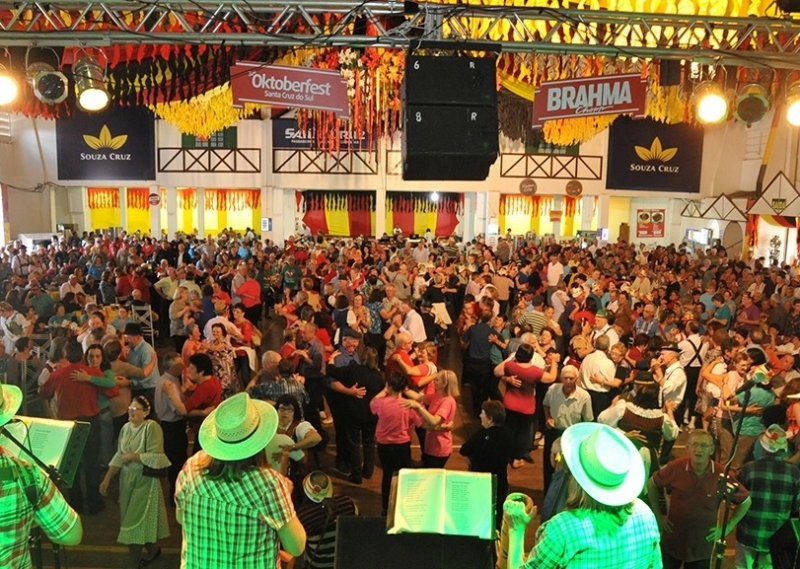
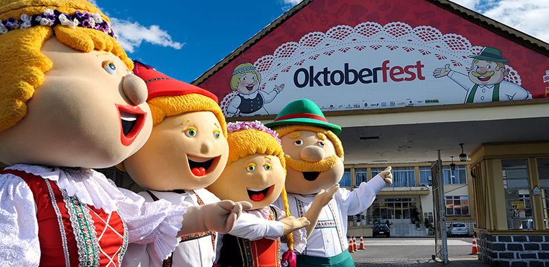

A Oktoberfest de Santa Cruz do Sul é a edição da Oktoberfest realizada em Santa Cruz do Sul, no Rio Grande do Sul. É um festival de celebração das tradições germânicas, que acontece desde 1984, As festividades sempre ocorrem no mês de outubro e, nos últimos anos, a duração vem sendo de 10 dias. Em alemão, "oktober" significa outubro, e "fest", festa ou festival. No Brasil, são realizadas ainda edições da festa em Igrejinha e Blumenau.


Volte ao início
Acabou sua jornada